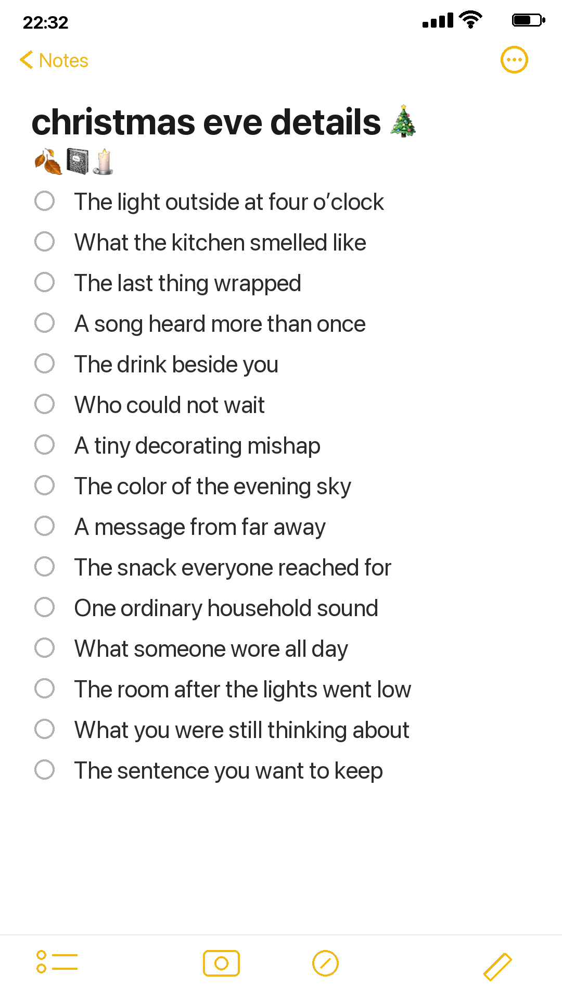

Christmas Eve is full of tiny details that rarely appear in the main photographs. Use this phone note to capture the sounds, snacks, repeated phrases, and quiet moments that make your celebration recognizable.

Copy the list into one phone note
- The light outside at four o’clock
- What the kitchen smelled like
- The last thing wrapped
- A song heard more than once
- The drink beside you
- Who could not wait
- A tiny decorating mishap
- The color of the evening sky
- A message from far away
- The snack everyone reached for
- One ordinary household sound
- What someone wore all day
- The room after the lights went low
- What you were still thinking about
- The sentence you want to keep
Do not answer every prompt
Choose the detail that makes you pause. Write the exact phrase, color, smell, or sound while it is fresh. A useful note can be six words long. It does not need to become polished writing.
Put the newest observation at the bottom and include a time when light or weather matters. Do not interrupt a conversation to write a paragraph. A few nouns and one exact verb are enough to recover the moment later.
Want a low-pressure page to practise with? Open the 100 free floral pictures, choose one image that matches your palette, and try the method before using a favorite original.
Turn one note into one page
After the holiday or winter day, read the list once. Circle one detail, choose one photograph or flat paper trace, and write three sentences: what happened, what you noticed, and why you want to keep it.
Use one neutral paper, one seasonal color, and a small dark anchor. Leave enough blank space to add a date later. The phone note is a holding place, not another task to complete perfectly.
Choose one physical trace
A tag, recipe copy, envelope corner, paper napkin pattern, or handwritten shopping list can connect the phone note to the real day. Use a copy when the original is fragile, thermally printed, valuable, or contains personal information. Trim only blank areas and keep words that establish place or time.
Write so the page still sounds like you
Begin with the plain fact, then add the detail you would tell a friend. Avoid forcing the memory into a sentimental conclusion. “The kitchen was loud and the rolls were late” may be more alive than a general sentence about a perfect holiday.
If the day was complicated, let the page be complicated. You can preserve warmth without pretending every moment was easy.
Keep private details private
Use initials for sensitive family stories and avoid photographing addresses, tickets, or receipts with personal information visible. Move anything important into a backed-up document after the season.
Make the habit easy to repeat
Pin the note during the season and reuse the same simple structure: date, place, sensory detail, exact words, and one thing worth keeping. Delete prompts that do not fit. The useful practice is noticing, not completing every line.
Keep the finished page physically light
Use copies of bulky keepsakes and attach only flat paper. Place adhesive around edges sparingly, let it dry with the page open, and check that no personal information remains visible. A light page is easier to revisit, scan, and store for years.